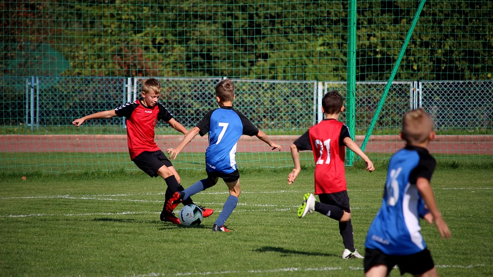
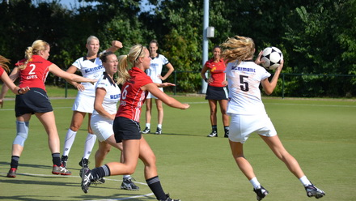
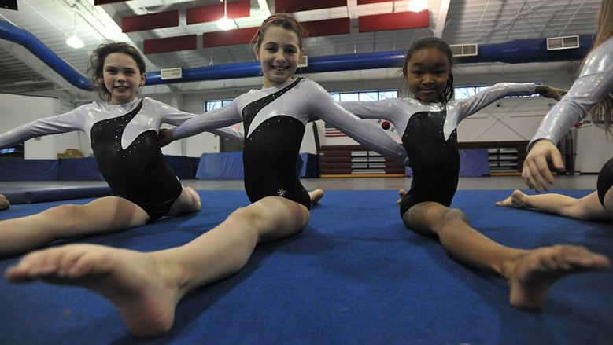
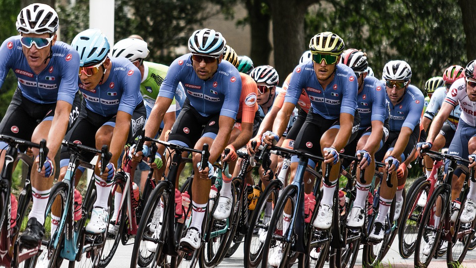
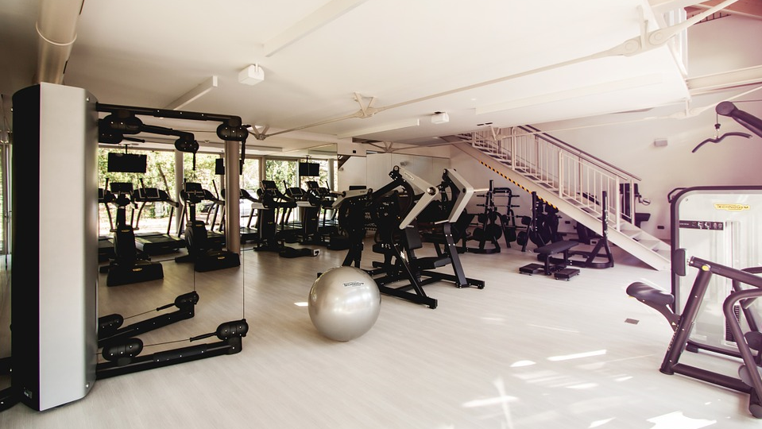
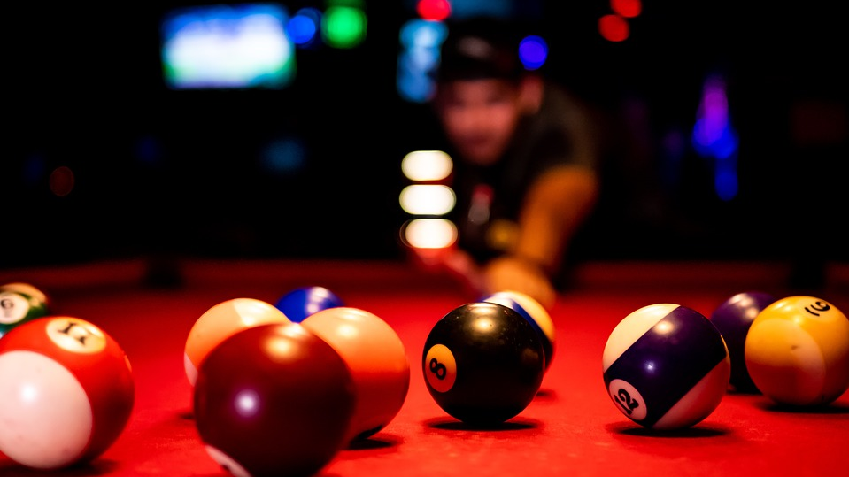
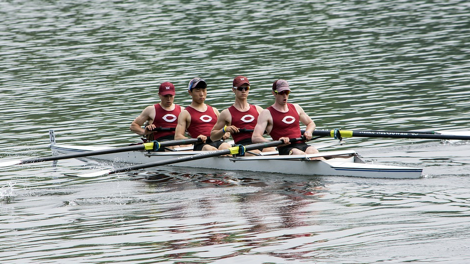
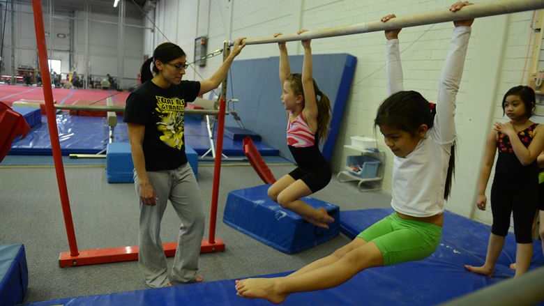

Everything you need to know about Haarlem, Haarlem-Oost, sportclubs in Haarlem-Oost and taekwando
Haarlem
The city Haarlem is mostly known for its architecture. There is a beautifull old inner city, but if you look around a bit more you'll find a lot of really clean modern buildings. The trainstation of Haarlem is also very well known for its architecture, because a lot of cast iron was used in it.
Shopping is also for sure something which you can do plenty in Haarlem. There are more than enough nice looking shopping districts and in the heart of Haarlem lies the "Grote Markt" which is filled with clothingshops, antique and curio shops and countless other shops. Haarlem was even elected multiple times as best shopping city of the Netherlands.
In Haarlem there is a lot of choice when it comes to food and drinks. Lunchrooms, caffeehouses, restaurants, you name it. a quick snack, extensive dinner or just a cup of coffee, it's all in Haarlem.
Haarlem Oost
There is an area in Haarlem which is called Haarlem-Oost. This area lies east of the inner city of Haarlem. Haarlem-Oost can be divided into three smaller areas, Amsterdamse- and Slachthuiswijk, Parkwijk and the Waarder- and Veerpolder.
The Waarder- and Veerpoler is more of a companyterrain and this is also where the IKEA is located. the IKEA has a really large furniture product range and there is also a restaurant included who have all sorts of swedisch dishes. The IKEA is also very accessible by train if you get off the train at the station called Spaarnwoude.
The "Beatrixplein" is located in Parkwijk, in there there are loads reastaurants and shops. Fitness center Fitfabriek is located in the middle of parkwijk. There is also a really beautifull park in Parkwijk, that's probably also why it's called "Park"wijk.
In the Amsterdamse- and Slachthuiswijk is a street called the Amsterdamstraat. This street is a long shopping district full of supermarkets, clothingshops and even restaurants. If you're going shopping there anyway, why don't you also go see the iconic "Amsterdamse Poort" which is located at the end of Amsterdamstraat and lies in the Herensingel canal.
sportclubs
Haarlem Yildiz Spor
Haarlem Yildiz Spor (HYS) is a soccerclub. This soccerclub is located in the park of Parkwijk and is suited for young and old.

Oosterkwartier
Oosterkwartier is a korfball sportclub. Korfball is a dutch sport which resembles basketball a bit, but you're not allowed to walk with the ball.

Gymnasticsclub Bato Haarlem
Bato is a gymnastics club located next to the park of Parkwijk. The club focusses itself on the youth and also participates in competitions.

Munenmuso
Mumenmuso is a sportclub that specializes itself in japanese fighting styles. The dojo is small, but there is a lot of personal attention. The dojo is located in the Slachthuisbuurt.
HRC Excelsior
HRC Excelsior is a sportclub dedicated to bike racing. It is for old and young and also hosts loads of competitions every year. HRC Excelsior is located in the Waarderpolder.

Fitfabriek
Fitfabriek is a place to work out. They host a lot of fun group lessons and have a lot of diet tips. It is located in the middle of Parkwijk.

Olympia Haarlem
Olympia Haarlem is located below Haarlem-Oost and is the most versatile sportclub of Haarlem. Soccer, softball, badminton, billiards, darts, frisbee, cardgames, you name it!

Amphitrite
Amphirite is a rowing club. It is located next to Olympia Haarlem and most of the members are students. If you want to join this club prepare to get a little wet.

Sportclub HLC
At Sportclub HLC you can do yoga, gymnastics and freerunning. It is mostly for younger people except for the bodyshape course and the yoga. Sportclub HLC is also located below Haarlem-Oost.

Hwa-Rang Dragon
Hwa-Rang Dragon is a club that specializes itself in martial arts. The dojo is located in Schalkwijk. At Hwa-Rang Dragon you can choose between, taekwando, brazilian jiu jitsu and mudo.